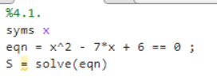
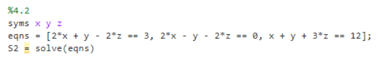
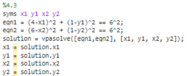
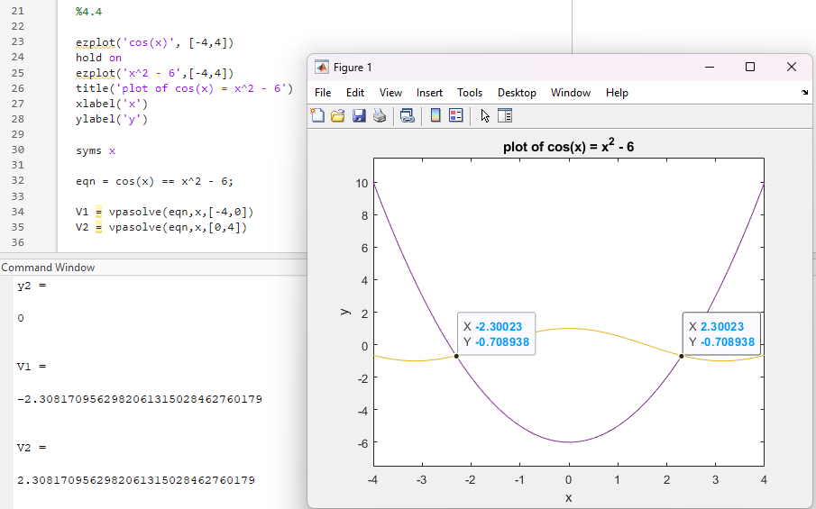
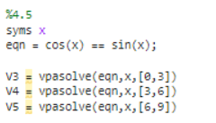
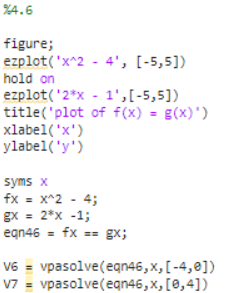
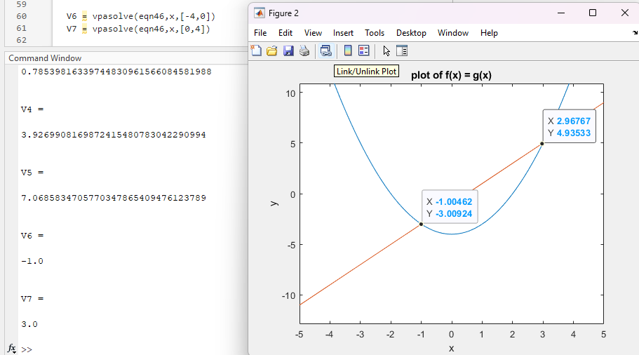

This lab served as an introduction to the Symbolic Math Toolbox in Matlab. This extension of Matlab allows for the solving of complex problems extremely quickly utilizng simple setup and syntax. The goals for this lab are to utilize the Symbolic Math Toolbox to solve complex problems and to understand the benefits of using the Symbolic Math Toolbox. This will be done throuhg a series of examples where different functions are used to solve a variety of problems that would normally take a good bit of thought.
4.1
The following code gives the results labeled below:

x = 1
x = 6
4.2
The following code gives the results labeled below:

x = 51/16
y = 3/2
z = 39/16
4.3

C1 = (-1.92, 0)
C2 = (11.92,0)
4.4

x = -2.308
x = 2.308
4.5

x1 = .7854f
x2 = 3.9270
x3 = 7.0686
4.6
 
x = -1
x = 3
What did you enjoy about this lab?
I enjoyed getting to utilize new functions with a new extension. I have not used Matlab very much so this was very interesting.
What didn't go well?
I struggled getting an equation that would work for problem 4.3. I utilized the vpasolve for that as I found it a good way to get that solution after some research.
How would you improve this lab?
To improve the lab I would implement a few more examples to work through. I think that would help to solidify the concepts.
Code for this lab: Lab1.m